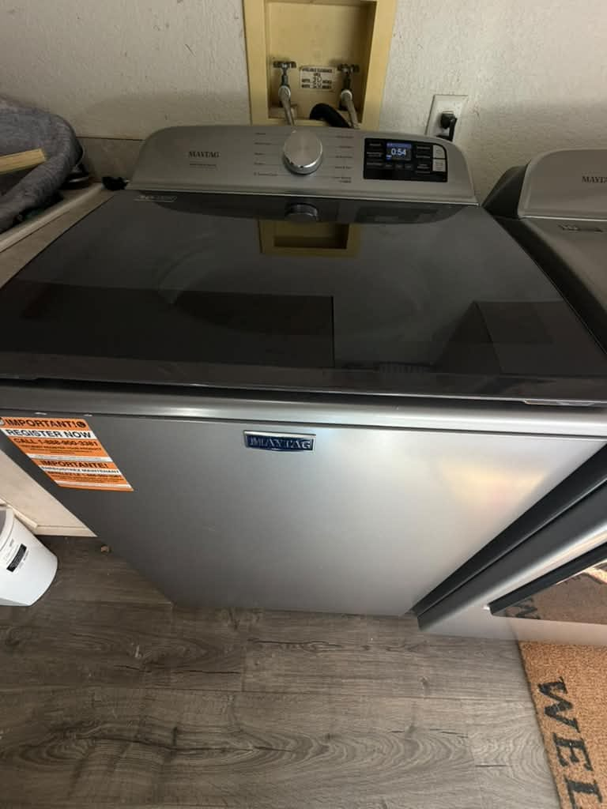
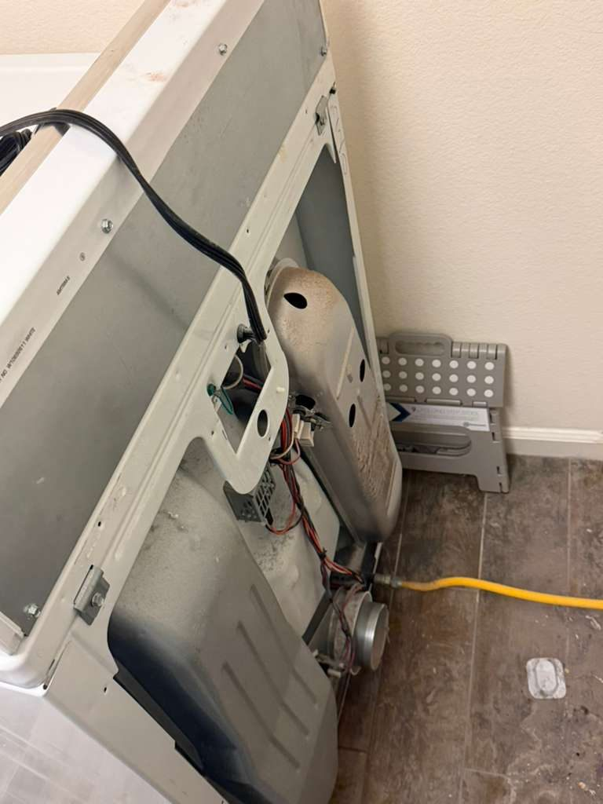
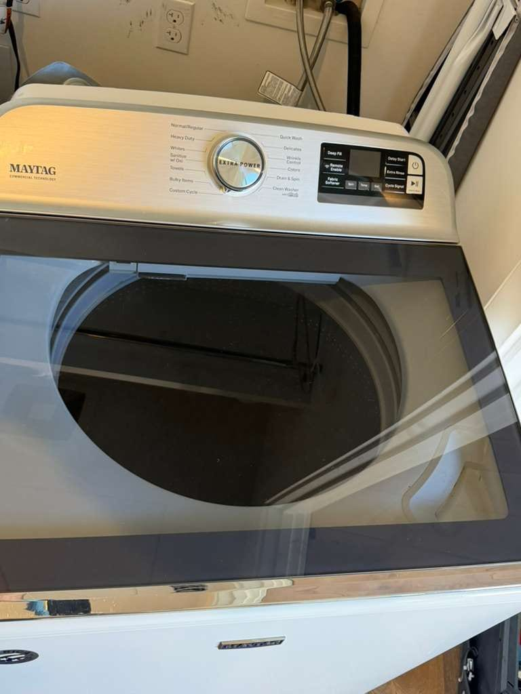

Maytag Washer, Dryer & Kitchen Appliance Repair in Orange County
Bravos washers that won't lock or spin, F5 E2 lid-lock errors, dryers that won't heat, and worn tub bearings. We know Maytag, and the Whirlpool platforms it is built on. Same-day service available.
5.0 · 156 Google reviewsMon–Sat, 8am–7pm.

What to expect
- Flat $99 diagnostic feeApplied toward the repair if you approve the work.
- Written quote firstItemized, before any work starts.
- 90-day parts, 30-day laborWarranty on every repair.
- Same-day serviceCall or request online.
Family-owned since 2017 · Licensed, bonded & insured
Recent Maytag Repairs
A Maytag top-load washer our technician recently serviced in Stanton: the lid lock was replaced. We also worked on a Maytag dryer in Trabuco Canyon: it tumbled but would not heat, so we tested the heating circuit, found a failed thermostat, and replaced it before confirming a full heat cycle. In Corona del Mar, we photographed a Maytag top-load washer during a service call for a control-board problem.


Not sure if it's a Maytag or a Whirlpool? See our Whirlpool appliance repair service, or our Orange County washer repair service.
What Our Customers Say
From our 156 verified 5-star Google reviews
G-A is the best appliance repair guy in OC, he's fast, accurate, on time, and very clear explaining what needs to be done and why. He diagnosed and explained my broken washer water pump in about 3 minutes. If you want someone to do the right job for the right price call Universal.
Called AG and received a quick response. Was polite and efficient. Very reasonable and honest. Fixed my stove top and freezer.
AG was wonderful - quick and easy! Loved working with him. Highly recommend :)
Universal Appliances Repair Group fixed our Maytag quickly and professionally. They were easy to schedule, arrived on time, and diagnosed the problem right away. The technician explained what was wrong and gave us a fair price up front. The repair took more than one visit, but they kept us updated, got the right part, and followed through. Our appliance works like new again. Communication was clear from start to finish, and the work area was left clean. I'd gladly use them again and recommend them to anyone who needs appliance repair.
Excellent experience from start to finish! The team did a fantastic job repairing our Sub Zero refrigerator. They were able to locate the original parts needed, complete the repair, and get everything installed very quickly, which meant very little downtime for us.
They were punctual, communicated clearly throughout the entire process, and the work was extremely clean and professional. Everything was handled efficiently and the finished result exceeded my expectations.
It's not always easy to find a company that is reliable, knowledgeable, and gets the job done right the first time. Highly recommend them for any appliance repair or installation!
I had my dryer vent cleaned and was very happy with the service. The technician was professional, friendly, and took the time to thoroughly clean the vent and explain what was being done. I noticed a difference in the dryer’s performance afterward, and I feel much better knowing the vent is clean and properly maintained. I would definitely recommend this service to anyone needing their dryer vent cleaned!
From Call to Fixed: How a Maytag Repair Works
Here is exactly what happens from your first call to a fully working Maytag appliance.
Request a RepairCall or Request Online
Reach us at (949) 629-5365 or submit the contact form. Share the model number and the symptom or error code, and we schedule you the same day when possible.On-Site Diagnosis
A technician arrives in a 2-hour window and tests the lid lock, pump, element, bearing, or board to find the exact fault, rather than guessing at parts.Upfront Quote
You get a clear, itemized quote before we start. The $99 diagnostic fee is credited toward the repair if you proceed. No surprise charges at the end.Repair & Warranty
Common Maytag lid locks, pumps, and elements ride in the van, so most repairs finish the same day. Every repair carries a 90-day parts and 30-day labor warranty: if the same problem returns within 30 days, we come back at no charge.
Pricing & Discounts
- $99 diagnostic fee: applied toward your repair when you approve the work. If you decide not to proceed, the $99 covers the visit.
- Multi-unit visits: first unit $99, each additional unit on the same visit $49.
- 20% off labor for repeat customers and seniors 60+ (cannot combine with other offers).
Estimates vary by brand, part availability, and diagnosis. Final quote is provided before repair. See full pricing guide
Diagnostic visit$99
- Applied toward the repair when you approve the work
- Itemized written quote before any work starts
- You decide whether to proceed
Washers, Dryers, Refrigerators, and Ranges: Every Maytag We Repair
Maytag built its name on dependable laundry, and its washers and dryers are the machines we fix most. We service the full lineup, and the same well-documented Whirlpool-shared parts run across it.
- Bravos & Centennial Top-Load Washers
- Maytag's high-efficiency top-loaders. The classic failures are the lid-lock assembly (F5 E2), a worn tub bearing, and drive-system wear, and we carry the lid locks and pumps on the van.
- Maxima & Front-Load Washers
- Maytag's front-loaders share a platform with Whirlpool Duet. Door-lock faults, worn door boots, drain-pump clogs, and off-balance shaking are the repairs we handle most on these units.
- Electric & Gas Dryers
- Both vented electric and gas dryers. A dryer that runs cold usually needs a heating element, thermal fuse, thermostat, or igniter, and a clogged vent is the hidden culprit behind most no-heat calls.
- Refrigerators (Side-by-Side, French Door)
- Maytag side-by-side and French-door units share sealed-system and control parts with Whirlpool. We handle cooling loss, defrost faults, warm sections, and ice-maker problems.
- Dishwashers
- Built-in Maytag dishwashers. Not draining, not cleaning, standing water, and control-panel or heating faults are the usual service calls, and a clogged filter or drain pump is the frequent cause.
- Ranges & Ovens
- Freestanding gas and electric ranges plus wall ovens. A bake element that won't heat, a weak igniter, or a drifting temperature sensor are the faults we meter and repair the same day.
Lid Locks, No-Heat Dryers, and Maytag's Known Weak Points
Maytag appliances fail in specific, recognizable ways. These are the repairs our technicians handle most often on Orange County homes.
- Washer F5 E2 Lid-Lock Error
- The Bravos or Centennial fills but won't spin, and the lid clicks without locking. Almost always a failed lid-lock assembly, sometimes the striker or a board misread. It is the most common Maytag washer fault, and we carry the part.
- Washer Won't Drain or Spin
- Water stands in the tub. On top-loaders it is a failed lid lock, a clogged drain pump, or a worn drive; on the Maxima front-loader it is usually the door lock. We test each part before quoting so you pay only for the fault.
- Dryer Won't Heat
- Tumbles but blows cold. On electric models it is a blown thermal fuse, thermostat, or heating element; on gas it is the igniter or valve coil. A blocked vent overheats and trips the fuse, so we check airflow on every no-heat repair.
- Bravos Loud or No High-Speed Spin
- Grinding, rumbling, or a slow spin usually means a worn tub bearing or a failing drive system on the direct-drive motor. Left alone a bad bearing can damage the tub, so we inspect it early and advise honestly.
- Refrigerator Not Cooling
- A warm fresh-food section points to a failed evaporator fan, a stuck defrost system icing the coils, or a worn compressor relay. We diagnose the sealed system precisely rather than guessing at the most expensive part first.
- Ice Maker Not Working
- A Maytag ice maker that stops filling is often the water inlet valve, the ice-maker module, or a frozen fill tube, not the whole assembly. We test the valve and module so you are not paying to replace a part that still works.
- Dishwasher Won't Drain or Clean
- Standing water or gritty dishes usually trace to a clogged filter, a jammed drain pump, or a failed wash motor. We clear the blockage and confirm the pump and inlet valve before returning the unit to service.
- Oven Won't Reach Temperature
- A bake element that stays cold, a weak gas igniter, or uneven baking usually means a failed element or a drifting temperature sensor. We meter the element and sensor to pin down which one before quoting parts.
Maytag and the Whirlpool Connection: Why It Matters for Your Repair
Maytag still carries its old reputation for dependability, the lonely Maytag repairman who never had anything to do. What most Orange County homeowners do not realize is that since 2006, Maytag has been owned and built by Whirlpool Corporation, the largest appliance maker in the country. Today's Maytag rolls off shared platforms alongside Whirlpool, KitchenAid, and Amana, using many of the same control boards, drain pumps, lid locks, heating elements, and drive systems.
That connection matters the moment something breaks. A Maytag Bravos top-loader and a Whirlpool Cabrio are close cousins under the lid, and a Maytag Maxima front-loader shares its platform with the Whirlpool Duet. So a technician who genuinely knows Whirlpool already knows Maytag, and the lid lock or pump that fixes your Maytag washer is often the exact part that fixes the Whirlpool next door. We carry those common parts on the van precisely because they cross both brands, which usually means a faster, one-visit repair.
The practical upshot is simple. Maytag parts are widely available and reasonably priced because they are shared across the Whirlpool family, so most Maytag repairs are affordable and worth doing. If you are not even sure whether your machine is a Maytag or a Whirlpool, read us the model number when you call. It tells us the platform, the likely failure, and the parts to bring, so the first visit is the visit that fixes it.
Maytag Repair Costs: What to Expect in Orange County
A new Maytag washer or dryer runs roughly $700 to $1,200, so for most faults repair is the clear financial choice. These are typical Orange County ranges, not quotes.
| Repair Type | Typical Range |
|---|---|
| Service call / diagnostic: Orange County market average (often credited toward repair) | $75 – $100 |
| Washer lid lock / lid switch (F5 E2) | $150 – $300 |
| Washer drain pump / drain clog | $180 – $340 |
| Washer tub bearing / drive system | $220 – $460 |
| Dryer heating element / thermostat / thermal fuse | $180 – $320 |
| Refrigerator control board / thermostat | $200 – $420 |
| Dishwasher drain pump / wash motor | $180 – $360 |
| Oven bake element / igniter / sensor | $180 – $360 |
Estimates vary by brand, part availability, and diagnosis. Final quote is provided before repair.
Our company diagnostic fee is a flat $99 in Orange County, credited toward the repair if you proceed. See our full appliance repair cost guide for broader Orange County pricing context.
Maytag repair across Orange County
Universal Appliances Repair Group Inc. provides Maytag appliance repair across Orange County, California, including Bravos and Centennial top-load washers, Maxima front-loaders, electric and gas dryers, side-by-side and French-door refrigerators, dishwashers, and ranges. Maytag is built by Whirlpool on shared platforms, so we service both on the same parts. Common repairs include the F5 E2 lid-lock fault, dryers that will not heat, washers that will not drain or spin, and worn Bravos tub bearings.
We serve Mission Viejo, Costa Mesa, Irvine, Anaheim, and Santa Ana and surrounding cities, with same-day service available. Call (949) 629-5365 or book online to schedule a Maytag repair visit.
What Orange County Maytag Owners Ask Us
The most common questions from Maytag owners across Mission Viejo, Costa Mesa, Irvine, Anaheim, and surrounding Orange County cities.
Still have a question? Call (949) 629-5365.
Yes. Maytag laundry is one of the repairs we handle most. We service Maytag Bravos and Centennial top-load washers, Maxima front-loaders, and both electric and gas dryers across Orange County, and we carry the common lid locks, lid switches, drain pumps, heating elements, and thermal fuses on the van. Because Maytag is built by Whirlpool on shared platforms, many of those parts fit across both brands. Call (949) 629-5365 for same-day availability in Mission Viejo, Costa Mesa, Irvine, Anaheim, and surrounding cities.
F5 E2 is the lid-lock error on Maytag Bravos and Centennial top-load washers: the machine cannot confirm the lid is locked, so it will not spin. It is the single most common Maytag washer fault we see. The usual cause is a worn or failed lid-lock assembly, though sometimes it is the striker, the wiring, or the control board misreading the switch. A washer that fills but never spins, with the lid clicking but not locking, almost always needs the lid-lock assembly. We test the lock, striker, and board before quoting so you only pay for the part that failed.
A Maytag dryer that tumbles but blows cold air has almost always lost one of three parts: a blown thermal fuse, a failed heating element (on electric models), or a bad igniter or gas valve coil (on gas models). A blocked vent is the hidden cause behind most of these, because trapped heat overheats and blows the thermal fuse, so we check airflow as part of the repair. We recently replaced a failed thermostat on a Maytag dryer in Trabuco Canyon for exactly this kind of no-heat call. We test the element, fuse, thermostats, and igniter to find the real failure rather than swapping parts.
On a Maytag top-load washer, a tub full of water that won't spin out usually means a failed lid lock, a clogged or dead drain pump, or a worn drive system, while a front-load Maxima that won't spin often has a failed door lock. If the water never drains at all, the drain pump is blocked by lint or a lost sock. Maytag Bravos washers are also known for the drive system and bearing wearing out on high-mileage units. We isolate whether it is the lid lock, pump, drive, or door lock before quoting so you only pay for the real fault.
Effectively, yes, under the hood. Whirlpool Corporation has owned Maytag since 2006 and builds it on shared platforms alongside Whirlpool, KitchenAid, and Amana. A Maytag Bravos top-loader and a Whirlpool Cabrio are close cousins, and many control boards, pumps, lid locks, and heating parts cross over between them. That means our technicians already know these machines and often carry parts that fit both brands. If you are not sure whether your appliance is a Maytag or a Whirlpool, tell us the model number when you call and we will confirm it and bring the right parts.
A Maytag Bravos that grinds, rumbles, or won't reach full spin speed usually has a worn tub bearing, a failing drive system, or a rotor and stator problem in the direct-drive motor. Loud spinning is often the bearing; no high-speed spin is often the lid lock or the drive. These are common on higher-mileage Bravos units, and left alone a failing bearing can damage the tub. We inspect the bearing, drive, and rotor and tell you plainly whether the repair is worth it on your specific unit.
In most cases, yes. A new Maytag washer or dryer runs roughly $700 to $1,200, while the common faults (a lid lock, a drain pump, a heating element, a thermal fuse, or a thermostat) cost a fraction of that. Maytag parts are widely available and reasonably priced because they are shared with Whirlpool, which keeps repairs affordable. Unless the tub bearing, drive system, or sealed system has failed on an older unit, repair is usually the sensible choice, and we give you a written quote before any work so you can decide with real numbers.
Our company diagnostic fee is $99 in Orange County, credited toward the repair if you proceed. Typical Maytag repairs run $150 to $300 for a washer lid lock, $180 to $340 for a drain pump, $180 to $320 for a dryer heating element or thermostat, $200 to $420 for a refrigerator control board, and $180 to $360 for a dishwasher pump or oven element. Because a new Maytag washer or dryer starts around $700, most repairs are clearly worth it. Estimates vary by model and part availability; we quote before starting.
We serve all of Orange County including Mission Viejo, Costa Mesa, Irvine, Anaheim, Santa Ana, Huntington Beach, Laguna Niguel, Fullerton, Garden Grove, Lake Forest, Newport Beach, Orange, and surrounding cities. Maytag is a workhorse laundry brand in Orange County homes, so we service it across every neighborhood daily. Call (949) 629-5365 to confirm same-day availability in your area.
One Maytag Laundry & Kitchen, Every Appliance Covered
A Maytag washer usually shares the house with a Maytag dryer, fridge, and range. One call handles your whole lineup, and the Whirlpool-shared parts to match.
- Washer RepairBravos, Centennial, and Maxima: F5 E2 lid locks, no-spin, no-drain, worn bearings, and drive systems.
- Dryer RepairElectric and gas dryers that won't heat, take too long, or won't start: elements, thermostats, and fuses.
- Refrigerator RepairSide-by-side and French-door units: cooling loss, defrost faults, and ice-maker problems.
- Dishwasher RepairNot draining, not cleaning, standing water, and control-panel faults on Maytag dishwashers.
- Oven & Stove RepairRanges and wall ovens: dead bake elements, weak igniters, and temperature drift.
- Whirlpool RepairMaytag's parent brand on shared platforms: the same lid locks, pumps, and boards we already stock.
- Repair Cost GuideTypical Orange County price ranges by appliance and repair, so you know what to expect before you call.
- All ServicesEvery appliance we repair across Orange County, from refrigerators to wine coolers.
Need Maytag Repair in Orange County?
Same-day service available. Call now or book online; a technician will confirm your appointment within the hour.
Call (949) 629-5365
Request a Repair
Mon–Sat, 8am–7pm